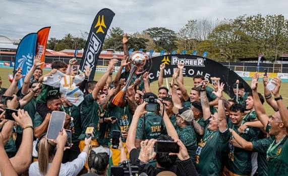

¿Como nacio el InterSC?
El Inter San Carlos es un club de fútbol de Costa Rica, originario del distrito de Pital, Alajuela, que actualmente compite en la Primera División (Liga Promerica). Su historia destaca por una vertiginosa evolución institucional y deportiva en menos de una década
Ascenso Histórico a la Primera División (2025-2026)
Bajo la dirección técnica de Douglas Sequeira, la gerencia deportiva de Yosimar Arias y la inversión de su presidente Giovanni Paniagua, el equipo consolidó un proyecto altamente competitivo en la categoría de plata.
